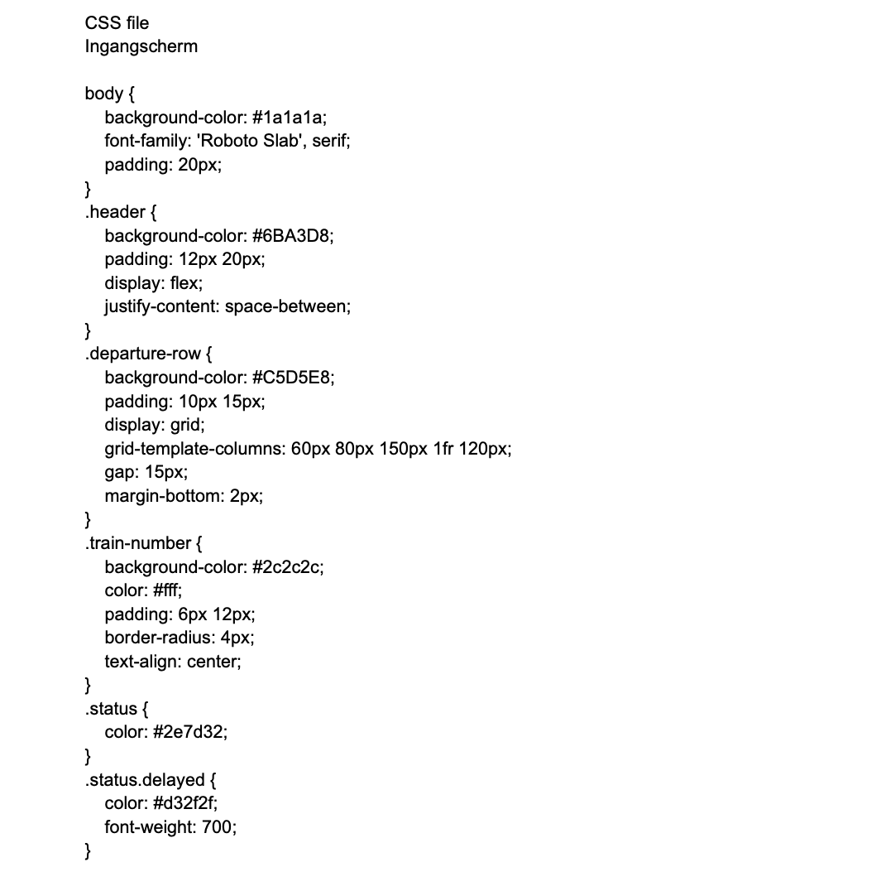
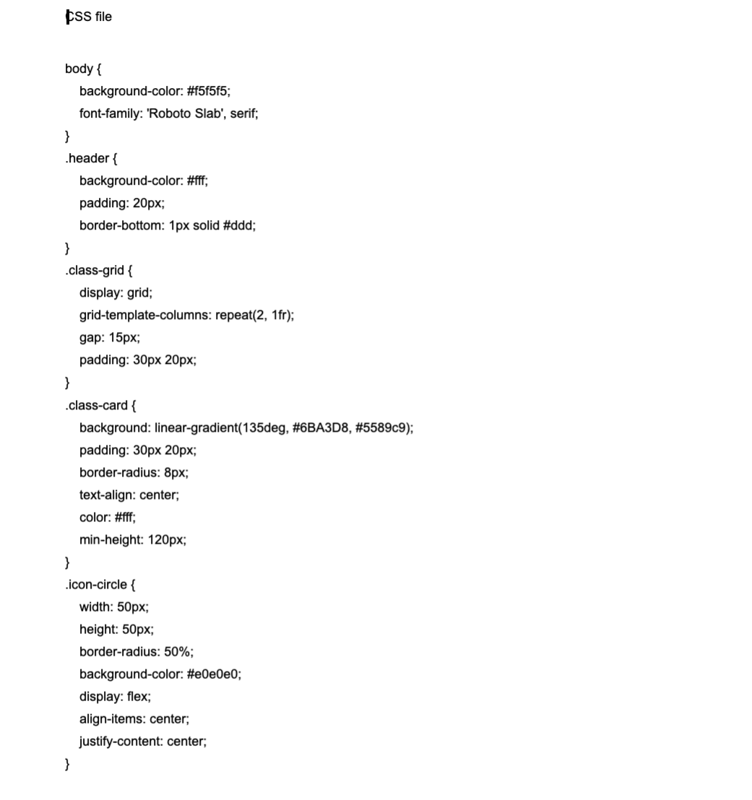
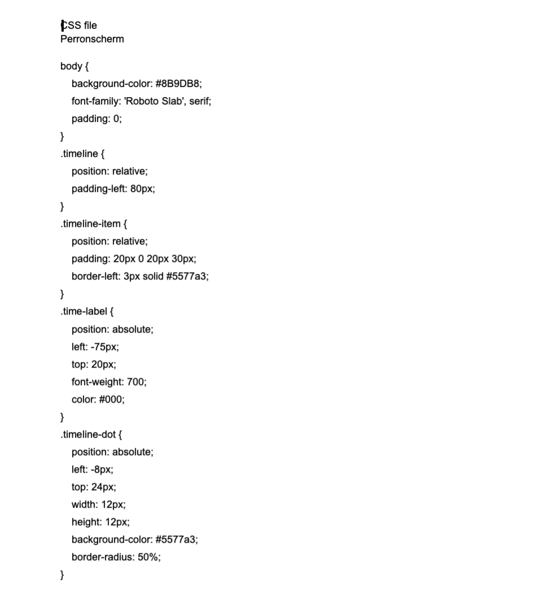
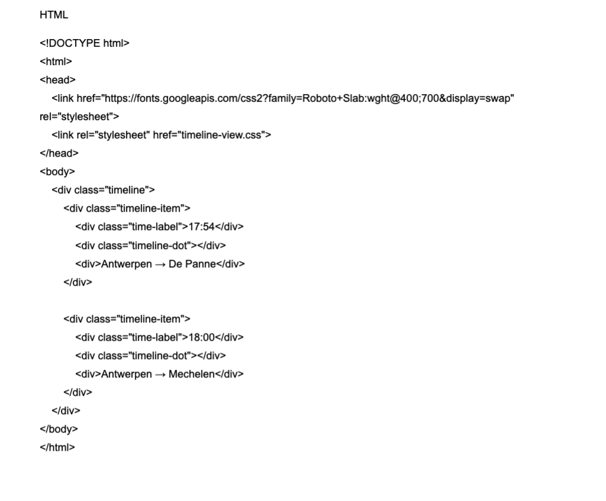
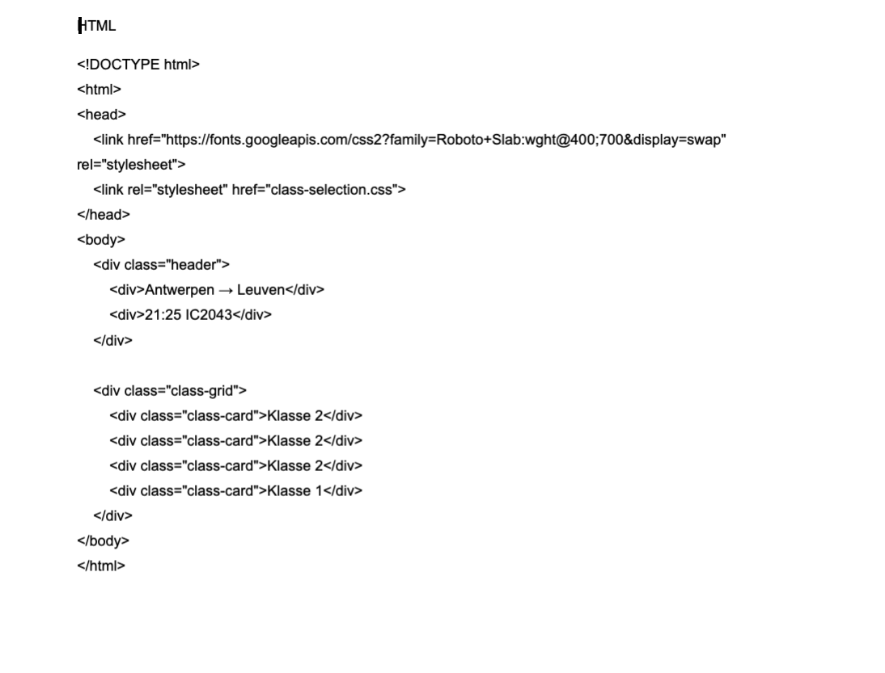
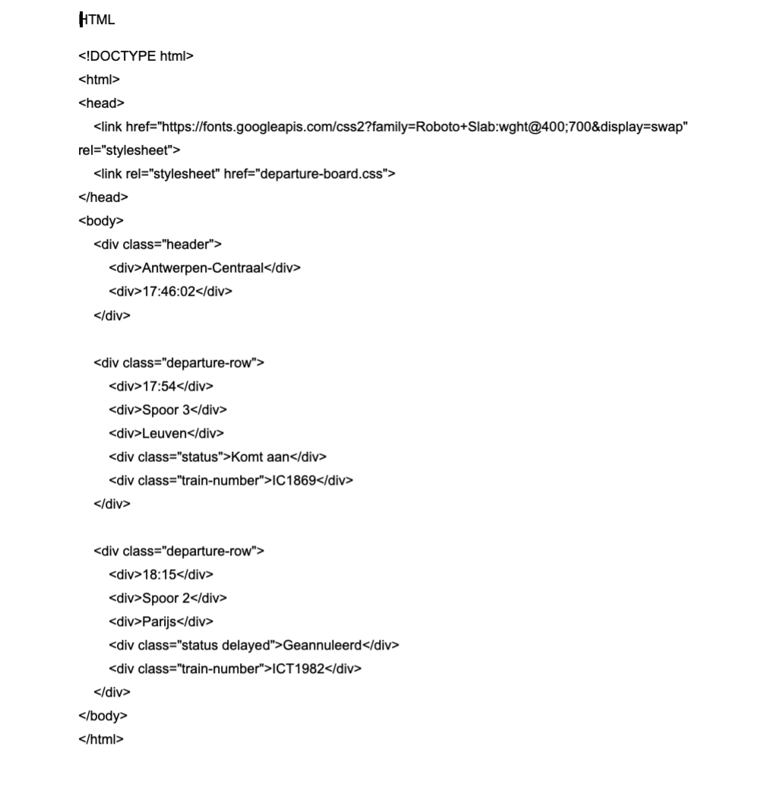

les 4
Ik heb ook geëxperimenteerd met de Netlify-app. Ik heb mijn schermen in ChatGPT gestoken en gevraagd om van die schermen een HTML en CSS file te maken. Hieronder vind je afbeeldingen van mijn HTML en CSS files.





